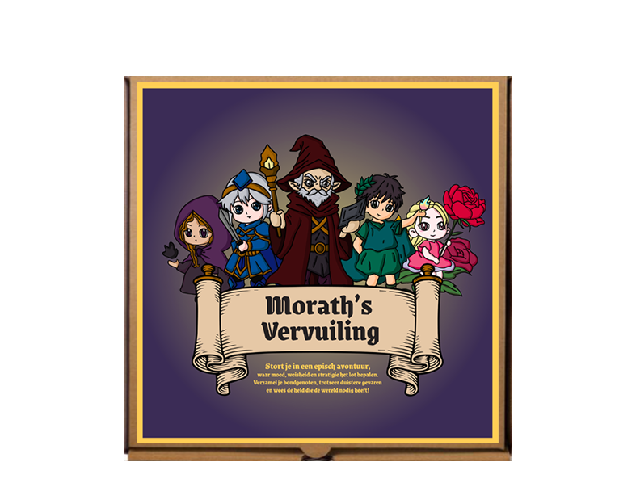
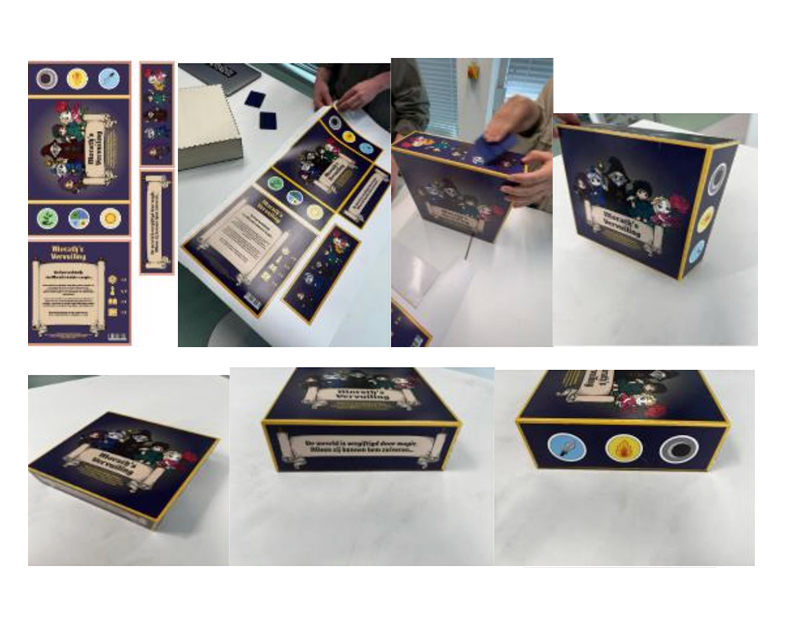
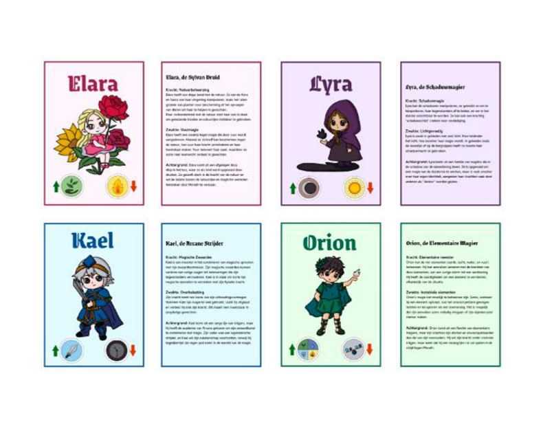

Morath’s Vervuiling – Cooperative Board Game
Physical game design (Makerslab & Adobe)
View project ↗About this project
For the team project "Passieproject”, we created a cooperative fantasy board game called Morath’s Vervuiling. The goal was to design a product that reflects our personal passions while also contributing something meaningful to society.
In the game, one player is the master who tells the story, and up to four players work together as wizards to defeat an evil sorcerer. Players move across the board, make choices and roll dice to determine what happens next, which makes every playthrough different.
The core values behind the game are sustainability, freedom, friendship and collaboration. We built the physical components using recycled materials (such as reclaimed wood) and designed the visuals with Adobe. The game is aimed at players aged 14–18 and is meant to spark conversation about environmental issues while having fun together.
Preview

